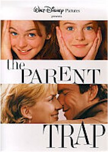
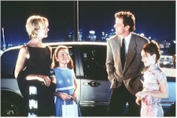
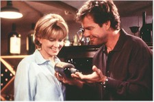

Contents | Features | Reviews | News | Archives | Store |
 |
|
| Movie Credits | Buy It! |
The Parent Trap
Review by Carrie
Gorringe
Posted 31 July 1998
|  | Directed by Nancy Meyers Starring
Dennis Quaid, Natasha Richardson, Screenplay by David Swift, |
The Parent Trap represents something of a dilemma for the average reviewer; it’s not a film so much as it is a modern myth of sorts. Call it the manifestation of a modern wish fulfillment for children of divorced parents. After all, in an era in which, we are told, divorce rates have, until recently, been skyrocketing, wouldn’t it be comforting to believe in the concept of Mom and Dad, as a single, forever inseparable, unit are just a reconciliation scheme or two away from realization? For Baby-Boomer parents like director Meyers and her husband, Shyer, the idea of remaking one of their cultural icons must have been an irresistible idea – a way of sharing their past with their children. Moreover, the entire concept seems to get more endearing with every remake (the 1961 original starred Maureen O’Hara and the late Brian Keith as the parents, with Hayley Mills playing the twins, and there was also a 1988 made-for-cable version); it’s cuddly to the point of pathology.
Like any other myth, however, it has a pathological streak all its own. Parent Trap wants its audience to entertain the possibility that parents, for the sake of their own convenience, could separate their biologically-identical children with impunity – and then the audience is to disregard this rather hideous behavior as quickly as possible. Try as anyone might, however, it’s a difficult task to master; the discomfiture one feels over such parental insolence is never far from a filmgoer’s consciousness. The secret to making Parent Trap , and other myths, work as a form of entertainment is to keep the tempo moving and the personalities and situations flowing fast enough so that the positive aspects of the story keep the more monstrous aspects just at bay, and this version succeeds in doing so. Richardson and Quaid are just perfect in their roles as the parents from heaven who carry their guilty secret not far from their hearts. The film, of course, belongs to Lindsey Lohan, who assumes the challenges in the role of identical twins with such gusto that she convinces the audience beyond any doubt as to the distinctiveness of each facet of her dual personalitiesThat having been said, this new version is not without a few flaws. For starters, it’s a little too impatient to cut to the chase; consequently, it treats much of the expository material, where the two sisters meet, as something that has to be gotten past as quickly as possible, and the charm of the two sisters rediscovering each other for the first time threatens to implode under the force of speed. It might also be nice if director Meyers could tame her aggravating tendency toward using too many dolly shots and superimpositions, especially during crowd scenes; at times, Parent Trap looked more like a product of Leni Riefenstahl’s second unit. On the other hand, since Parent Trap is a form of triumph of the will (best referred to as Kinder Über Alles ), maybe the unintentional analogy contained in the film’s visuals is appropriate, after all.
Contents | Features | Reviews | News | Archives | Store
Copyright © 1999 by Nitrate Productions, Inc. All Rights Reserved.